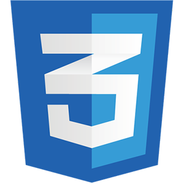
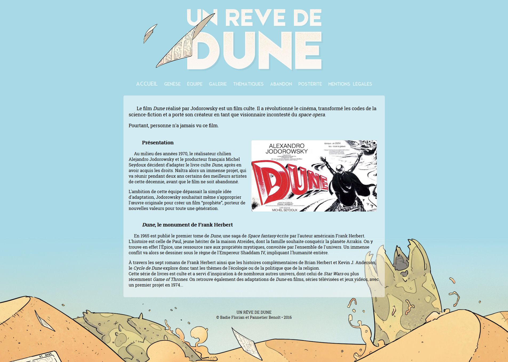

Projets Étudiants
Un Rêve de Dune (Septembre-octobre 2016)
Objectif : Développer un site web statique consacré au projet d'adaptation cinématographique de la saga Dune par Alejandro Jodorowsky.
Contexte : Travail en binôme, 1re année à l'IUT Informatique Paul Sabatier.
Outils :

Note finale : 19/20

Made with ♥ by Benoît Pannetier © 2019
Finding Space by Takahiro Sakamoto